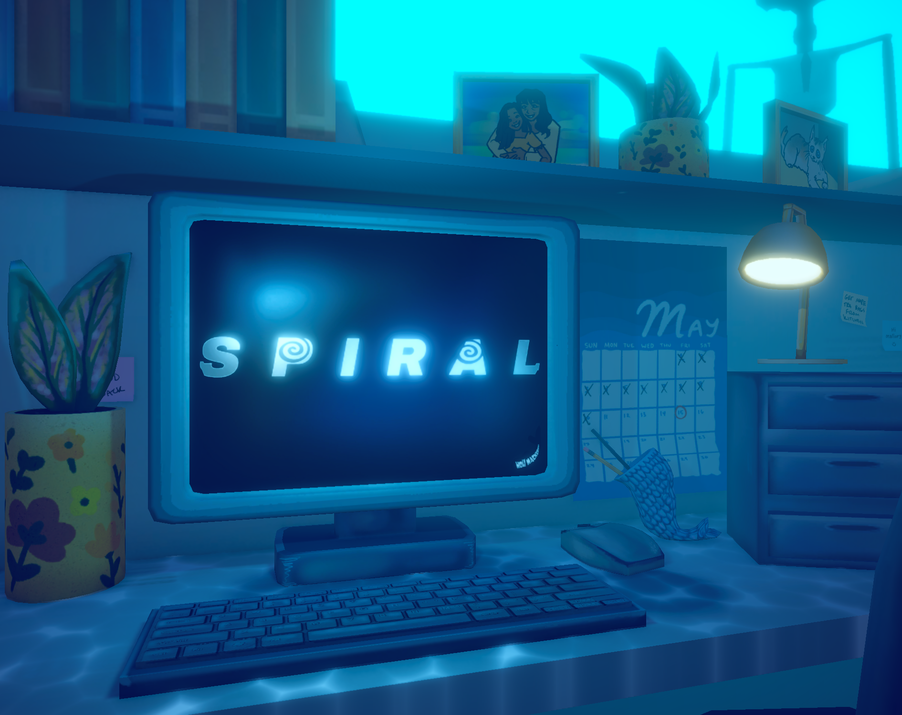

Spiral (Working Title), In Development
Unity, Lead Programmer, Level Designer

What Is This?
A part point and click puzzle game, part first person horror game all about managing one's anxiety and the dangers of overwork and losing sight of your priorities. This game is being developed as part of my Senior Capstone. We plan on releasing the game on Steam at the end of its development, in Spring 2027.
You can find a vertical slice of this game on itch.io here.
What Is My Part?
I am the lead programmer in a team of 4, currently working with 1 other programmer. I also have been in charge of level design for some of the levels.
The Challenges
Initially we had a team of 5, with another programmer. Unfortunately, our other programmer had issues arise and so our producer has had to step into a programming role (our producer is the 1 other programmer I mentioned previously). Additionally, our writer is in charge of coming up with the content for the various word puzzles the player must complete, however he is not comfortable working in a game engine, especially fine-tuning the various UI elements that the puzzles entail.
The Results
As of writing, Spiral is still in development, but, there has already been a lot of work put into the game. In the span of approximately 6 weeks, we were able to take Spiral from concept, to a fleshed out vertical slice, this showed off the game loop, the unique aspects of the game, as well as how the story would be delivered to the player. In these 6 weeks I was largely in charge of the design and code surrounding the primary puzzles the player must solve, as well as entirely in charge of the background system mechanics, enemy AI, level transitions, player controls, and more. In additions to these aspects of gameplay, I also created a tool to aid in the play testing of our level design, a simple script that saves and later displays a tester's path as they try to solve a maze in our game. This tool allowed for us to easily see where players are getting lost in the level, and better diagnose possible solutions.
Additionally, in the 3 months following the vertical slice, during which development was largely paused for the summer, I worked on refactoring the code base of the game, fixing many bugs and exploits, and implementing a number of developer tools. These tools included not only a tool set for debugging the game, with various dev tools that could be accessed with the click of a button, but also a series of tools for creating content for the various puzzle types in the game. These puzzle creation tools were intended to allow our writer, who is unfamiliar with much of the flow of Unity's prefab and UI systems, a way to easily create more puzzles based off of his writing and following simple prompts for entering the information. From that entered information the tools would automatically construct the text given into a new, working, challenge for the players to deal with.
More information regarding Spiral will be added here as development continues.